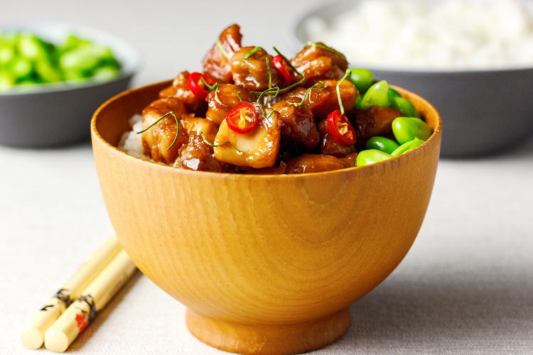

We're so used to caramel being firmly
entrenched as for desserts-only that the idea of its use in savoury foods can seem counterintuitive. In Thai cuisine, however,
balance is everything, so while there is sweetness, of course, there must also be sourness, and that's exactly what we have here.
In this version of a Thai caramel, sourness is provided firstly by red wine vinegar and later by fresh lime juice. The addition of a
single star anise bridges the gap between the sugar and the acids, so it comes together as a spectrum of flavours, far removed from
a desserty caramel.
Use cast-iron skillet because the large surface area helps the sauce reduce more quickly. Instead of multiple pans, park a bowl
and a piece of foil next to the stove to shuffle the ingredients around as it go along. It sounds odd, but read through the
directions before you start and it will all make sense.
Finally, a warning: this is not a recipe for beginners. You'll need to reduce a liquid a couple of times, know how to control your
heat properly and work with hot, melted sugar, all of which can be tricky or even dangerous. For an easier - and infinitely safer -
recipe, try my Asian-spiced sticky chicken drumettes instead. If you're comfortable in the kitchen, however, you're in for a treat.
Serves 2.
3 tablespoons red wine vinegar
50g (1/4 cup) brown sugar
1 star anise
125ml (1/2 cup) chicken stock
1 tablespoon peanut oil
2 chicken thigh fillets, skin off, cut into bitesize pieces
juice of 1/2 lime
1 small red chilli, finely chopped
In a skillet or other wide pan (with a lid), stir
together the vinegar and sugar over low heat until the sugar dissolves. Add the star anise, turn the heat to medium and simmer
gently for 5 minutes.
Add the chicken stock and turn the heat up enough to produce a steady bubble. Reduce the mixture by half, stirring occasionally.
Pour into a bowl and set aside.
Heat the oil in the pan over medium-high heat and stir-fry the chicken until it is sealed all over and just beginning to brown.
Pour the liquid mixture over the chicken, cover and turn the heat down to low, simmering for 5 minutes. Check that the chicken is
cooked all the way through before using a slotted spoon to transfer it to your bowl. Cover with foil to keep it warm.
Add the lime juice to the sauce and turn up the heat, reducing again until you have about 1/2 cup left.
Return the chicken to the pan and toss it in the liquid. Keep tossing - quickly but carefully, please - over medium-high heat until
the sauce comes together and is sticky enough to coat the chicken well. Remove from the heat and let it cool a little before
serving (to avoid burned mouths).
Serve this with plain, steamed rice, spooning over any caramel remaining in the pan, with a scattering of fresh chilli and a simply
steamed Asian green like bok choy or edamame beans on the side.
This recepie is taken from aforkandapencil.com